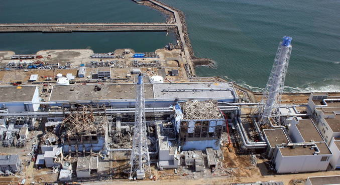
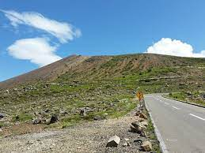

Era uma vez...
Okuma, distrito de Fubata em Fukushima, Japão.
A central nuclear está localizada em Okuma que fica na prefeitura de Fukushima, prefeitura é uma espécie de divisão territorial no Japão, que assemelha a de províncias. A mesma tem um território de 767,7 km² e estimada com 287.357 habitantes. Originalmente foi chamada de central nuclear de Fukushima DA IT, que significa Fukushima número 1. Construída a beira do mar, a usina começou a ser edificada no ano de 1967.
Na usina havia 6 reatores, sendo que oficialmente o primeiro inaugurou em 1971 e o último em 1979. Até então havia um plano de construir mais 2, mas por conta do desastre de 2011, os planos foram canceladas. A capacidade da Usina era de 4,7 gigawats(GW), fazendo dela uma das 25 maiores usinas do mundo. Era gerida pelo Tokyo Eletric Power Company (TEPCO), e antes de 2011 a usina já tinha passado por incidentes.
Em 1978 houve problemas no reator 3, e em 2009 houveram falhas em alguns setores que fizeram alarmes dispararem. Ainda assim, era comsiderada relativamente segura. Porém, tudo mudou em 2011, quando um terremoto de 9 graus na escala Richter, sentido na ilha de Honshu, fez com que um tsunami atingisse a usina e afetasse 3 dos 6 reatores da Usina.
